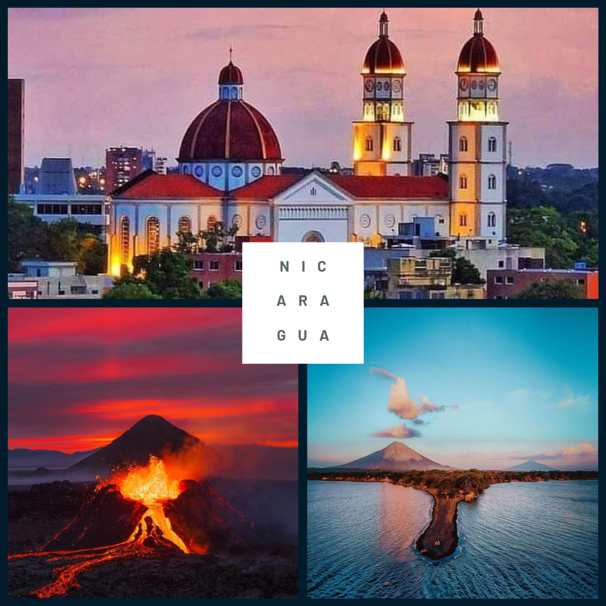
Bienvenido a Nicaragua
Conoce un poco sobre este hermoso país
Conoce a Nicaragua a través de un video
Turismo
Acompáñanos en esta sección para conocer algunos lugares turísticos de Nicaragua
Gastronomía
Algunos de los platos mas ricos de Nicaragua.
Gallo Pinto
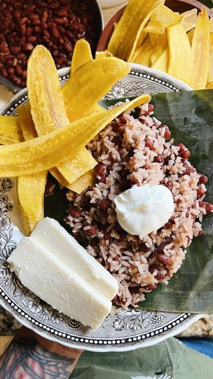
Es el desayuno típico nicaragüense, una mezcla de arroz y frijoles cocidos con especias. Se acompaña con queso, crema, plátanos fritos y tortillas.
Nacatamal
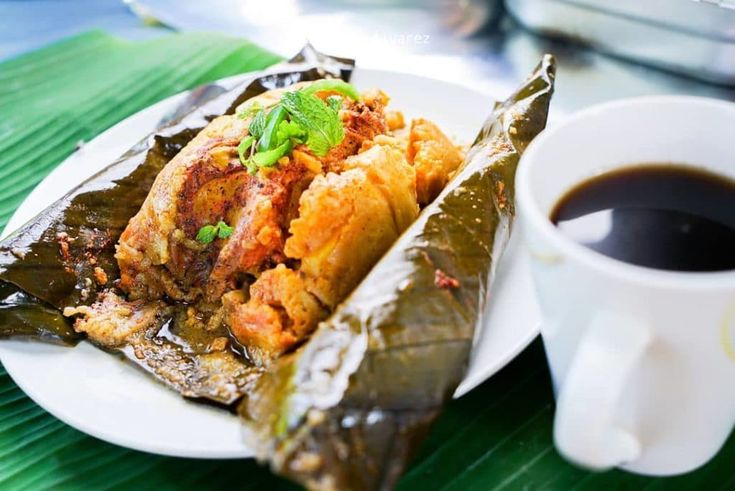
Un tamal grande hecho con masa de maíz, relleno de cerdo o pollo, arroz, papas, tomates, pasas y hierbas, envuelto en hojas de plátano y cocido al vapor. ¡Perfecto para los fines de semana!
Vigorón
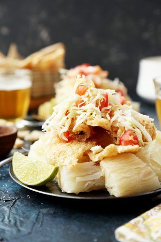
Comida rápida típica de Granada. Consiste en yuca cocida, chicharrón crujiente y ensalada de repollo, todo servido en hojas de plátano.
Indio Viejo
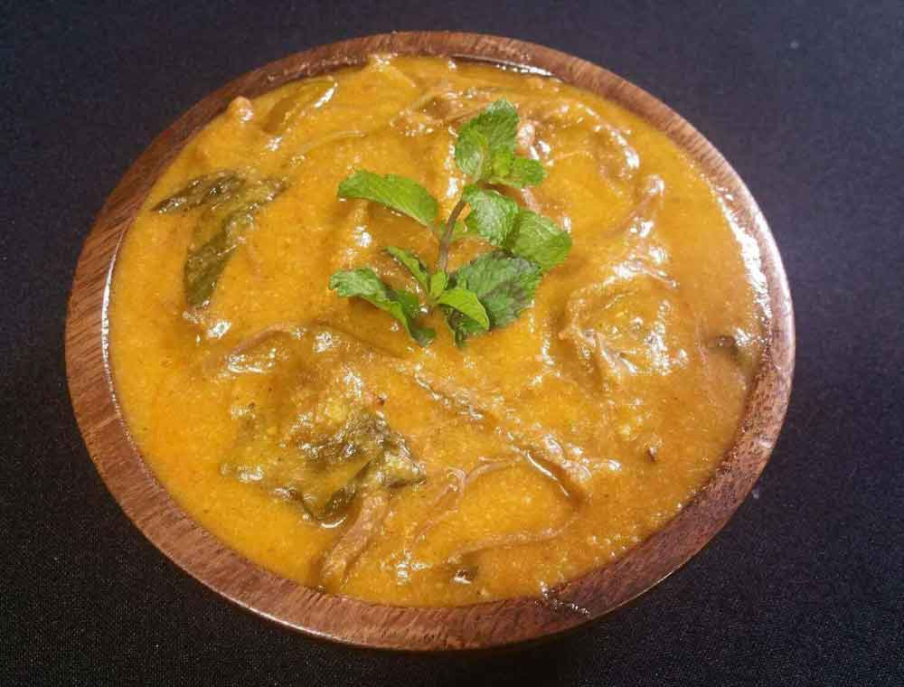
Un guiso a base de maíz, carne desmenuzada, achiote y especias. Tiene una textura espesa y un sabor único.
Sopa de Mondongo
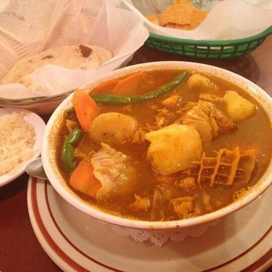
Sopa hecha con callo de res, verduras y especias. Es un platillo festivo y muy apreciado.
Rondón
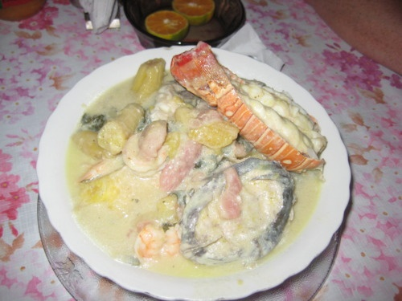
Originario de la Costa Caribe, es una sopa con pescado, carne de coco, plátanos verdes, yuca y otras raíces. Tiene un sabor exótico y es muy nutritivo.
Tres Leches
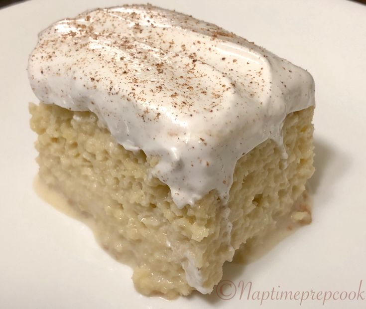
Este postre esponjoso es un favorito nacional. Se trata de un pastel remojado en una mezcla de tres tipos de leche, decorado con crema Chantilly.
Quesillo
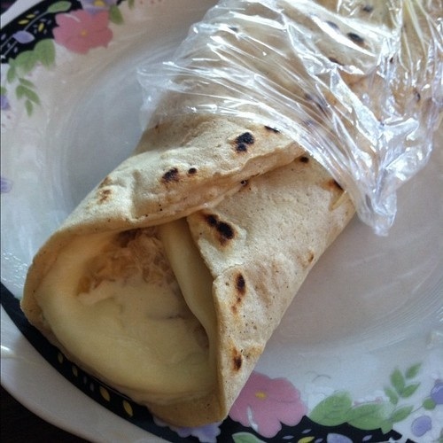
Originario de Nagarote y La Paz Centro, es una tortilla de maíz rellena con queso fresco derretido, crema y cebolla encurtida, todo envuelto en una bolsa de plástico para comerlo al paso.
Rosquillas Somoteñas
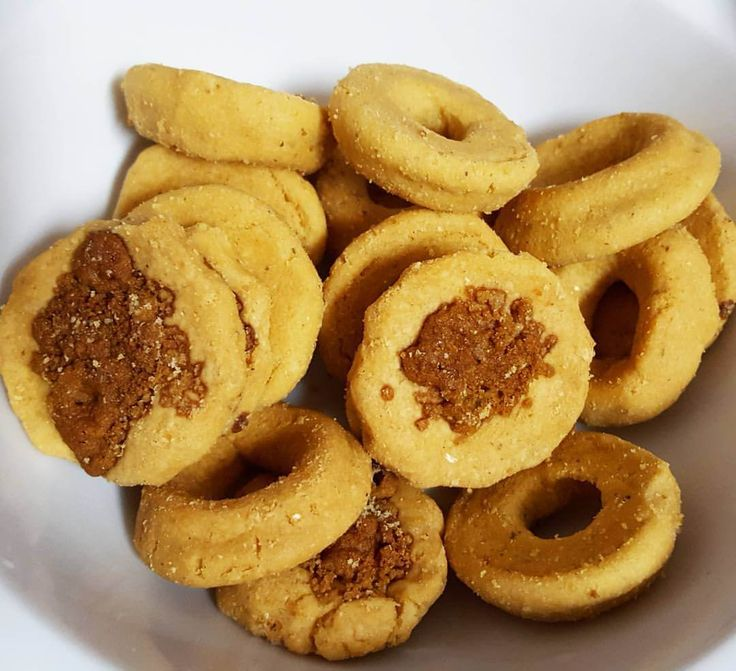
Un bocadillo tradicional hecho de masa de maíz y queso seco, ideal para acompañar un café por la tarde.
Tiste
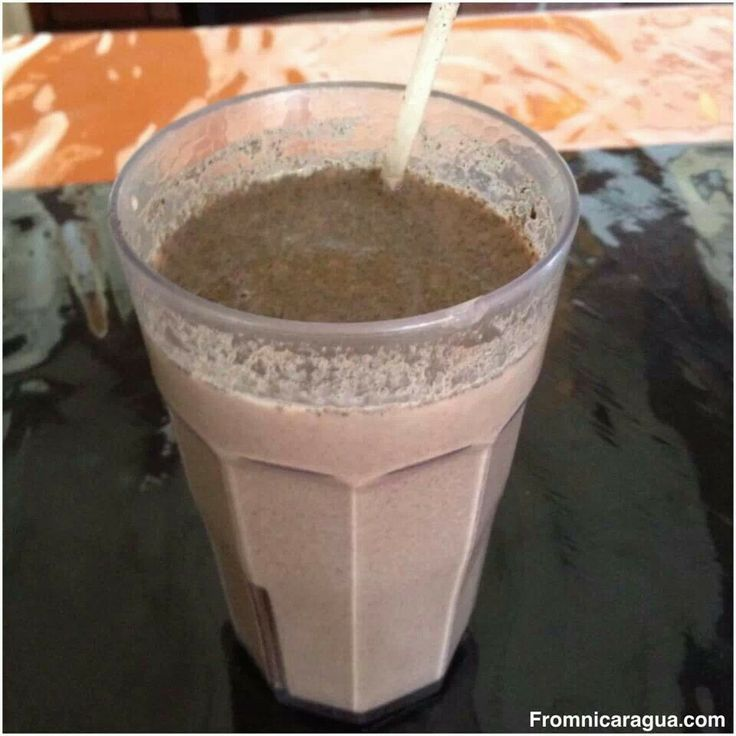
Una bebida refrescante a base de cacao, maíz y especias, típica para calmar el calor nicaragüense.
Historia
Acompáñanos en esta linea del tiempo sobre la historia de Nicaragua
Época Precolombina
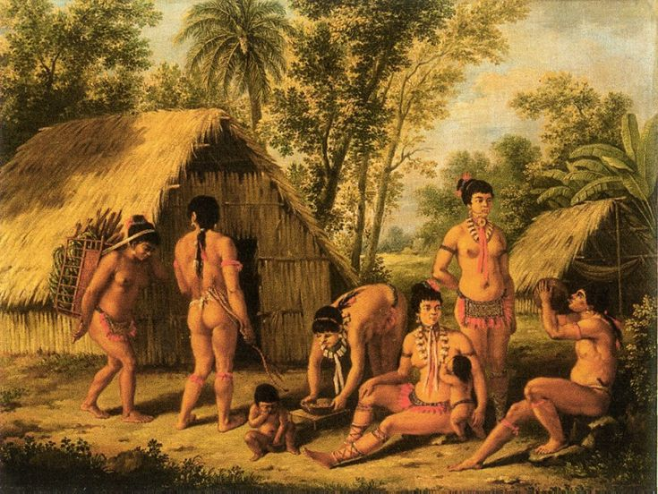
Antes de la llegada de los europeos, Nicaragua estaba habitada por diversas culturas indígenas, como los nahuas (en el occidente) y los Miskito's , sumos y ramas (en la costa atlántica). Estos pueblos tenían estructuras organizativas y desarrollaron formas de agricultura, comercio y religión propias.
Conquista y Colonización (1524-1821)
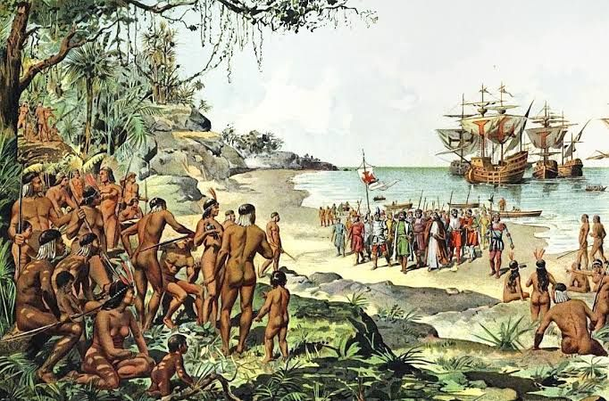
En 1524, Francisco Hernández de Córdoba y Gonzalo Fernández de Oviedo fundaron las primeras ciudades coloniales en lo que hoy es Nicaragua. A partir de este momento, los pueblos indígenas fueron sometidos a la colonización española. Nicaragua fue parte del Virreinato de Nueva España , primero como parte del Reino de Guatemala y luego como parte del Virreinato del Río de la Plata . Durante la colonia, Nicaragua vivió una lucha constante contra las enfermedades traídas por los colonizadores y las tensiones entre los españoles y los pueblos indígenas. El mestizaje fue un fenómeno cultural importante, y la economía se basó principalmente en la agricultura, la minería y la esclavitud de los indígenas y, posteriormente, de africanos.
Independencia (1821)

El 15 de septiembre de 1821, Nicaragua, junto con el resto de Centroamérica, proclamó su independencia de España. Sin embargo, los conflictos internos sobre la forma de gobierno y las pertenencias a diferentes federaciones marcaron las primeras décadas del país. Nicaragua formó parte de la Federación Centroamericana (1823-1838), pero la división política entre liberales y conservadores, y la intervención de potencias extranjeras, como los Estados Unidos y México, llevó a su disolución.
Dictaduras Liberales y Conservadoras (1838-1893)
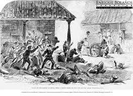
Después de la disolución de la federación, Nicaragua se dividió entre dos facciones políticas: los liberales y los conservadores. Durante este período, Nicaragua vivió una serie de conflictos internos y guerras civiles, que fueron alimentadas por las disputas sobre el control del poder y las influencias externas. La intervención de los Estados Unidos fue constante, debido a su interés en la región y la ubicación estratégica de Nicaragua, especialmente por el canal interoceánico. En este contexto, José Santos Zelaya , un líder liberal que gobernó entre 1893 y 1909, implementó reformas modernas y trató de transformar a Nicaragua en una nación más independiente. Sin embargo, su gobierno fue destruido por una intervención militar estadounidense y un golpe conservador.
Intervención de Estados Unidos (1909-1933)
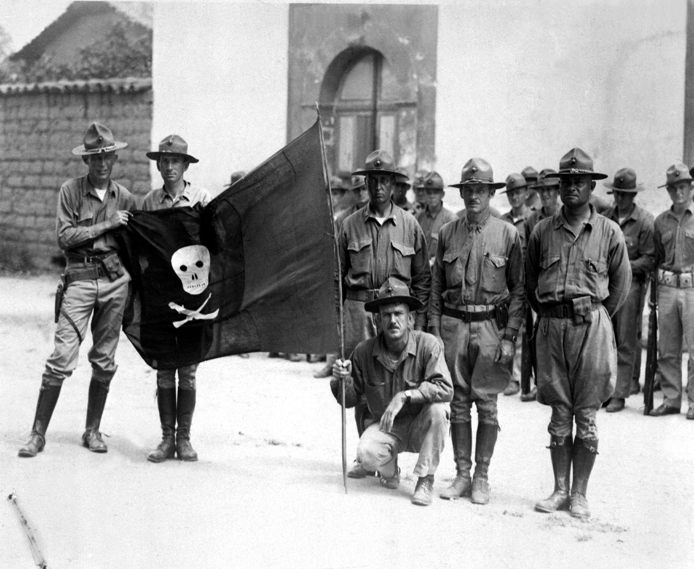
Desde principios del siglo XX, los Estados Unidos aumentaron su influencia en Nicaragua. En 1909, el gobierno de los Estados Unidos intervino para apoyar a los conservadores en la guerra civil, y en 1912, envió tropas para mantener el orden y proteger sus intereses. Esta intervención se mantuvo hasta 1933, cuando el dictador Anastasio Somoza García asumió el poder. Durante este período, Estados Unidos controló la política económica y militar del país.
La Dinastía Somoza (1936-1979)
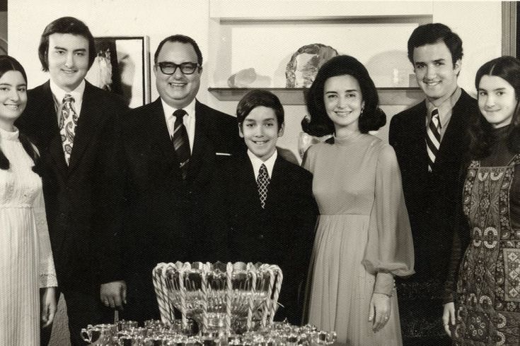
La familia Somoza gobernó Nicaragua durante varias décadas con un régimen autoritario y de gran corrupción. Anastasio Somoza García llegó al poder en 1936 y gobernó hasta su asesinato en 1956. Su hijo, Anastasio Somoza Debayle , continuó en el poder hasta la Revolución Sandinista en 1979. El régimen somocista se caracterizó por la represión política, el control de la economía y la concentración del poder en la familia Somoza. Además, la pobreza y la desigualdad aumentaron durante este período, y la mayoría de la población vivía en condiciones precarias, mientras que una pequeña élite política y económica controlaba el país.
La Revolución Sandinista (1979)
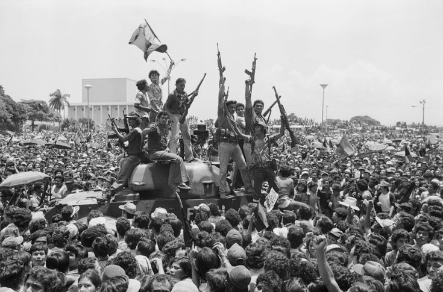
En 1979, un grupo guerrillero de izquierda conocido como el Frente Sandinista de Liberación Nacional (FSLN) , dirigido por figuras como Carlos Fonseca y Daniel Ortega , derrocó al régimen de Somoza. La Revolución Sandinista fue apoyada por diversos sectores de la sociedad nicaragüense, incluidos campesinos, trabajadores urbanos y estudiantes. El FSLN proclamó la creación de un gobierno revolucionario y socialista que buscaba implementar reformas agrarias, mejorar la educación y la salud, y avanzar hacia un sistema más justo. Sin embargo, la revolución fue enfrentada por una contrarrevolución financiada por los Estados Unidos, conocida como los "Contras" . Este conflicto armado se extendió a lo largo de la década de 1980, mientras que el gobierno sandinista enfrentabas económicos y la amenaza militar de la administración de Ronald Reagan en EE.UU.
La Era de los Contras y la Paz (1980-1990)
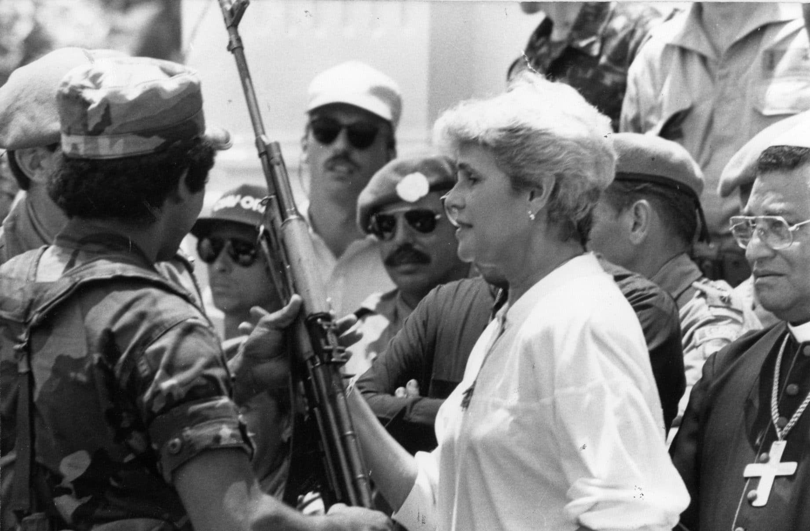
La guerra civil en Nicaragua, entre el gobierno sandinista y los contrarrevolucionarios apoyados por Estados Unidos, duró hasta 1990, cuando el país firmó un acuerdo de paz. En las elecciones de 1990, Violeta Chamorro derrotó a Daniel Ortega, poniendo fin a la era sandinista y permitiendo la transición hacia un gobierno democrático..
El Retorno de los Sandinistas (2007-presente)
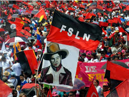
Daniel Ortega regresó al poder en 2007 tras ganar las elecciones, y su gobierno ha sido criticado por prácticas autoritarias, corrupción y represión de la oposición. A pesar de las reformas económicas que lograron reducir la pobreza en ciertos sectores, el gobierno de Ortega ha enfrentado numerosas protestas, especialmente tras los enfrentamientos violentos con la oposición en 2018. El gobierno actual sigue siendo un tema polémico y una fuente de conflicto tanto a nivel nacional como internacional, con la oposición acusando a Ortega de ser un dictador y de restringir las libertades democráticas en Nicaragua.
Situación actual
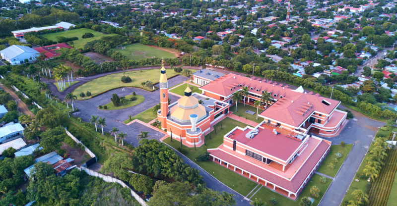
Nicaragua sigue enfrentando desafíos económicos, sociales y políticos, con una creciente concentración de poder en manos del presidente Ortega y su esposa, Rosario Murillo , quien ocupa el cargo de vicepresidenta. La situación de los derechos humanos, la libertad de prensa y la libertad de expresión sigue siendo un tema importante de debate tanto dentro del país como en la comunidad internacional.
Curiosidades
Acompáñanos en esta sección para conocer algunas curiosidades de Nicaragua
La celebración del Palo de Mayo, en la Costa Caribe, destaca por su música vibrante y bailes alegres en honor a la fertilidad y la cultura afrocaribeña.